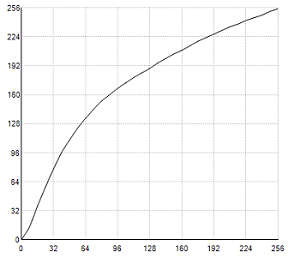
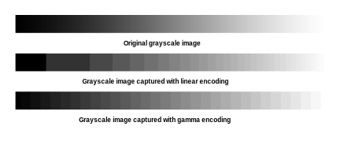

| Spectra 2xx ISP Tuning / IPE tuning | |
The proposed method provides a high quality gamma correction that can approximate practical gamma curves with virtually no loss in visual quality. From various experiments, it has been shown that there is no need to have 4096 entries of LUT for 12-bit data. Limited by the display resolution (8 bit per color per pixel) and human perception resolution, it is sufficient to use a few points to approximate the gamma curve and interconnect these points with straight lines. The linearly interpolated curve has almost the same visual performance as the original curve as long as the number of points that approximates the gamma curve is not too small. Per every frame, this single-pixel, single-color gamma transformation can be performed using a 64-value LUT for each of the colors: red, green, and blue.
Even though the input data to the Gamma Correction block is 12 bits, it is not
necessary to prepare a 4096 entry LUT. 64 entry-LUT is enough and these entries are
expanded by linear interpolation.

Gamma tuning adjusts the pixel sensitivity of the camera sensor to increase the contrast between various shades of a particular color. When a digital image is captured, each level of gray is encoded to a certain pixel brightness value. This pixel encoding can either be linear-encoded or gamma-encoded.
For example, in the image that follows, the original grayscale is
shown captured with linear encoding and gamma encoding. With linear encoding, large
increments of the dark end of the scale are shown at the same shade, which results
in low contrast of darker images. But with gamma encoding, the darker end of the
scale breaks the scale into smaller increments at different brightness levels, which
increases image contrast.

To tune the gamma of the tuning device to have the same contrast as a reference device, adjust the gamma curve of the tuning device to be the same as the reference device.